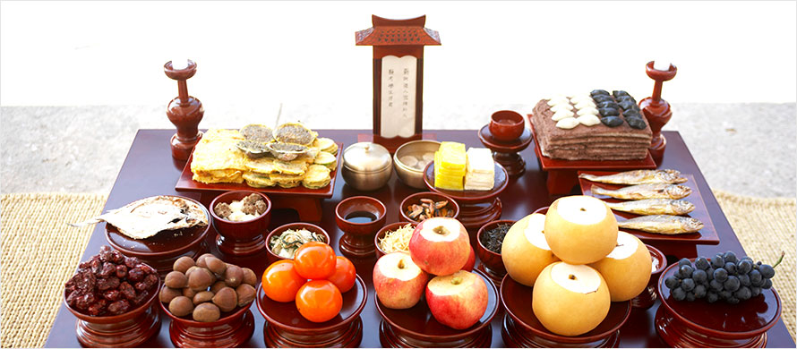

홈 > 장사관련정보 > 장례제례정보 > 제례정보
제례정보
종교별 장례방법에 대해 알려드립니다.

| 기준위치 | 제사상차림의 기준위치는 지방(신위)이 있는 쪽이 북쪽이다. 신위의 오른쪽은 동쪽, 신위의 왼쪽은 서쪽이다. |
|---|---|
| 남좌여우(男左女右) | 남자조상의 신위, 밥, 국, 술잔은 왼쪽에 놓고 여자조상은 오른쪽에 놓는다. 남자조상은 서쪽(왼쪽), 여자조상은 동쪽(오른쪽)에 위치한다. |
| 합설(合設) | 밥, 국, 술잔은 따로 놓고 나머지 제수는 공통으로 한다. 조상의 제사는 배우자가 있을 경우 함께 모신다. |
| 반서갱동(飯西羹東) | 산 사람의 상차림과 반대이다. 수저는 중앙에 놓는다. 밥은 서쪽(왼쪽) 국은 동쪽(오른쪽)에 위치한다. |
| 어동육서(魚東肉西) | 고기는 서쪽(왼쪽), 생선은 동쪽(오른쪽)에 위치한다. |
| 두동미서(頭東尾西) | 꼬리는 서쪽(왼쪽), 머리는 동쪽(오른쪽)에 위치한다. |
| 적전중앙(炙奠中央) | 적은 옛날에는 술을 올릴 때마다 즉석에서 구워 올리던 제수의 중심 음식이었으나 지금은 다른 제수와 마찬가지로 미리 구워 제상의 한가운데 놓는다. 적은 중앙에 위치한다. |
| 탕은 3열에 위치한다 | 신위를 기준으로 1열은 밥과 국, 2열은 적과 전, 3열은 탕, 4열은 포와 나물, 5열은 과일 및 과자류순으로 놓는다. |
| 생동숙서(生東熟西) | 나물은 서쪽(왼쪽), 김치는 동쪽(오른쪽)에 위치한다. |
| 좌포우혜(左脯右醯) | 포는 서쪽(왼쪽), 젓갈은 동쪽(오른쪽)에 위치한다. |
| 조율이시(棗栗梨枾) | 보통 진열의 왼쪽에서부터 대추, 밤, 감, 배의 순서로 놓고 있다. 밤, 대추, 감, 배의 순으로 놓는다. |
| 홍동백서(紅東白西) | 예서에 따라 붉은 과일은 동쪽, 흰 과일은 서쪽에 놓고 있다. |